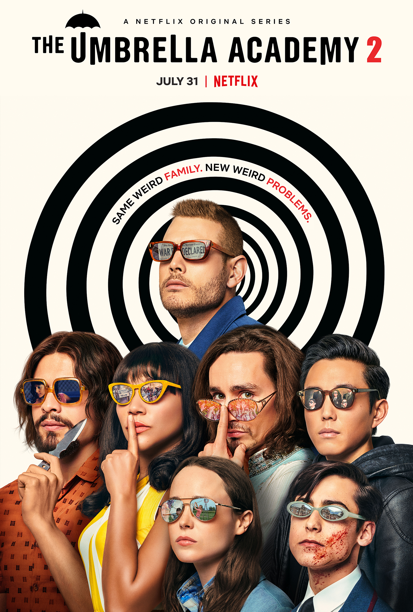

-
O Homem de aço

2013
Com a iminente destruição de Krypton, seu planeta natal, Jor-El e sua mulher procuram preservar a raça enviando o filho recém-nascido para a Terra. A nave espacial da criança aterrissa na fazenda de Jonathan e Martha Kent, que o batizam de Clark e o criam como seu próprio filho. Apesar das habilidades extraordinárias levarem o Clark adulto a viver à margem da sociedade, ele precisa se tornar um herói para salvar aqueles que ama de uma terrível ameaça. -
Mulher Maravilha

2017
Treinada desde cedo para ser uma guerreira imbatível, Diana Prince nunca saiu da paradisíaca ilha em que é reconhecida como princesa das Amazonas. Quando o piloto Steve Trevor se acidenta e cai em uma praia do local, ela descobre que uma guerra sem precedentes está se espalhando pelo mundo e decide deixar seu lar certa de que pode parar o conflito. Lutando para acabar com todas as lutas, Diana percebe o alcance de seus poderes e sua verdadeira missão na Terra. -
Batman: O Cavaleiro Das Trevas
2008
Com a ajuda de Jim Gordon e Harvey Dent, Batman tem mantido a ordem na cidade de Gotham. Mas um jovem e anárquico criminoso conhecido como Coringa ganha força e decide instaurar um verdadeiro caos na cidade. O justiceiro será testado psicologicamente e fisicamente como nunca fora antes em um confronto bastante pessoal. Cabe a Batman encontrar uma maneira de deter o sádico vilão antes que mais vidas sejam perdidas. -
Homem-Aranha 3

2007
O relacionamento entre Peter Parker e M.J. parece estar dando certo, mas outros problemas começam a surgir. A roupa de Homem-Aranha torna-se preta e acaba controlando Peter, que apesar de aumentar seus poderes, revela o lado obscuro de sua personalidade. Os vilões Venon e Homem-Areia tentam destruir o super-herói.
-
The Umbrella Academy
2019
Antes de falecer, o milionário Sir Reginald Hargreeves adotou sete crianças a fim de treiná-las para combater o mal. Depois que ele morre misteriosamente, esses jovens habilidosos unem suas forças para seguir o caminho para o qual seu pai adotivo os criou e acabam se envolvendo em um mundo muito mais perigoso do que eles imaginavam ser possível -
Shameless

2011
A série conta a história sobre a família disfuncional de Frank Gallagher (William H. Macy), um pai solteiro de seis filhos: Fiona Gallagher (Emmy Rossum), Phillip Gallagher (Jeremy Allen), Ian Gallagher (Cameron Monaghan), Debbie Gallagher (Emma Kenney), Carl Gallagher (Ethan Cutkosky) e Liam Gallagher (Brennan Kane Johnson e Blake Alexander), o único filho negro, apesar dos dois pais serem brancos. Enquanto ele passa seus dias totalmente bêbado, seus filhos precisam aprender a cuidar deles mesmos. -
The Office
2005
No formato de pseudodocumentário, a série retrata o cotidiano de um escritório em Scranton, na Pensilvânia, filial da empresa fictícia Dunder Mifflin, de suprimento de papel. Michael Scott (Steve Carell) é um patrão insensível mas que se preocupa com o bem estar de seus empregados, enquanto a série traça um olhar sobre todos eles, destacando suas diferenças e particularidades. -
Grey's Anatomy
2005
Em Grey's Anatomy, os médicos do Grey Sloan Memorial Hospital lidam diariamente com casos e consequências de vida ou morte. É um no outro que eles encontram apoio, conforto, amizade e, às vezes, até mais que amizade... Juntos, eles descobrem o quanto a vida profissional e a pessoal podem ser complicadas e se misturarem no meio do caminho.